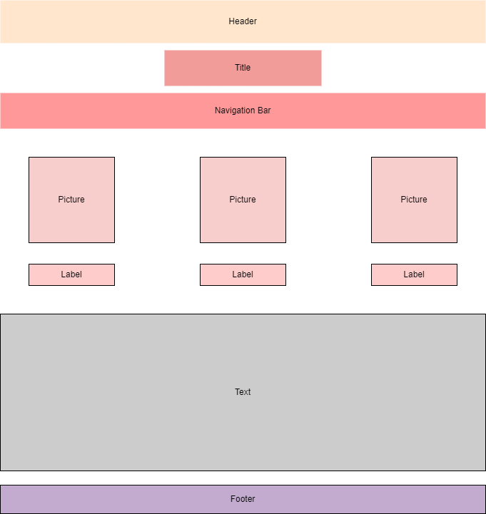
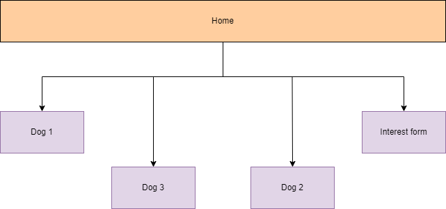

Project Design and Proposal
Project overview:
Application and Purpose:
Intended Users:
Overview of Content:
Client Information
Name: Deb Washburn
Affiliations: None
Phone Number: [private]
Email: [private]

Design of the page

Sitemap of the website
Homepage
Purpose: HomepageAudience: People who are looking for a dogContent: This page will have photos of the three dogs and explain that Deb is looking
for homes for them.Data Entry: NoneData Validation: NoneButtons/Links/Drop downs: The navigation bar will contain links to other pagesActions: NoneSpecial Notes: None
Meet Charlie
Purpose: Introduce interested individuals to CharlieAudience: People who are looking for a dogContent: This page will have photos of Charlie and have some information about herData Entry: NoneData Validation: NoneButtons/Links/Drop downs: The navigation bar will contain links to other pagesActions: NoneSpecial Notes: None
Meet Teddy
Purpose: Introduce interested individuals to TeddyAudience: People who are looking for a dogContent: This page will have photos of Teddy and have some information about himData Entry: NoneData Validation: NoneButtons/Links/Drop downs: The navigation bar will contain links to other pagesActions: NoneSpecial Notes: None
Meet Echo
Purpose: Introduce interested individuals to EchoAudience: People who are looking for a dogContent: This page will have photos of Echo and have some information about himData Entry: NoneData Validation: NoneButtons/Links/Drop downs: The navigation bar will contain links to other pagesActions: NoneSpecial Notes: None
Interest Form
Purpose: Get information about people who are interested in the dogs, so that my client
can contact themAudience: People who are looking for a dogContent: This page will ask for interested people to provide their contact information
and ask them some questionsData Entry: YesData Validation: YesButtons/Links/Drop downs: Submit buttonActions: This page will contact informationSpecial Notes: None